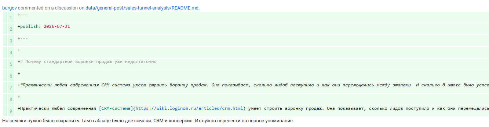
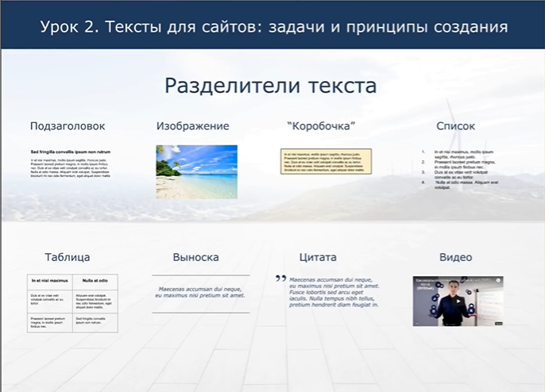
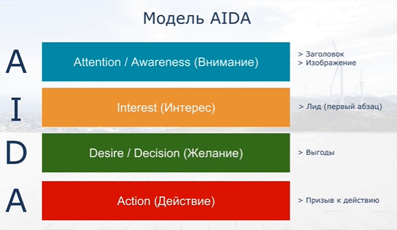
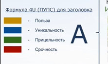
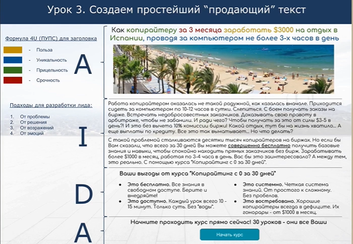

О проекте
Страница для проверки обхода второй страницы и обнаружения пяти изображений.
Изображения

О проекте №2

О проекте №3

О проекте №4

О проекте №5
Важно: файлы изображений намеренно не включены в архив. Добавьте их в папку
images/ с именами image_1.png ... image_15.png.